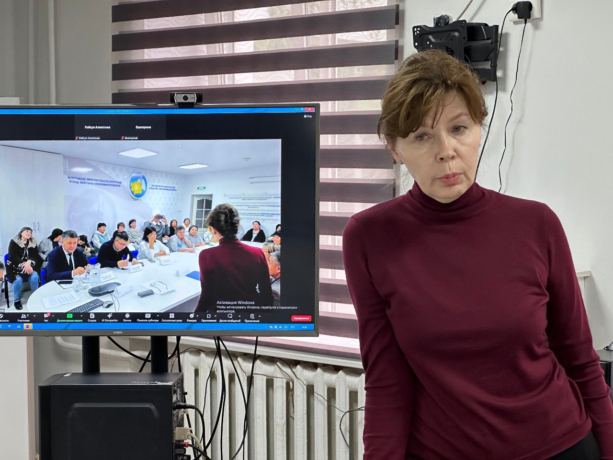
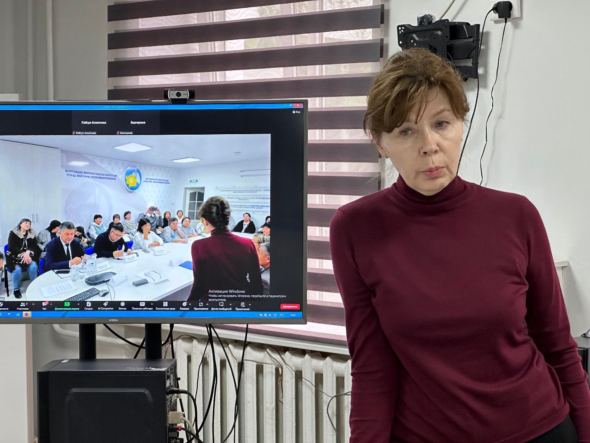

Новости
В центре фтизиопульмонологии состоялась встреча по разъяснению норм приказов Министерства труда и социальной защиты населения РК с руководителем Управления государственной инспекции труда по ВКО Бахытбеком Кизатовым, главным специалистом Управления государственной инспекции труда по ВКО Асланбеком Кабаевым, руководителем отдела пенсионного и социального обеспечения Департамента комитета труда по ВКО Мариной Шароновой, директором ТОО Республиканский научно-исследовательского института по охране труда Талгатом Немереновым и главным специалистом планового отдела УЗ ВКО Назирой Тюменбаевой.
18 сентября 2024
 

Коллектив центра получил исчерпывающие ответы на свои вопросы по Приказу МТиСЗН РК от 24 мая 2023 года № 170 «Об утверждении перечня производств, работ, профессий работников, занятых на работах с вредными условиями труда, в пользу которых агентами по уплате обязательных профессиональных пенсионных взносов за счет собственных средств осуществляются обязательные профессиональные пенсионные взносы (ОППВ)» и Приказу МТиСЗН РК от 26 декабря 2023 года № 526 «Об утверждении Правил осуществления, приостановления, возобновления и прекращения профессиональной выплаты за счет средств работодателя».